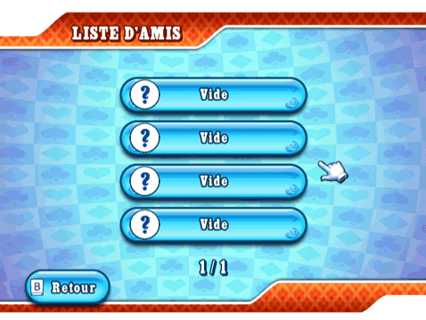
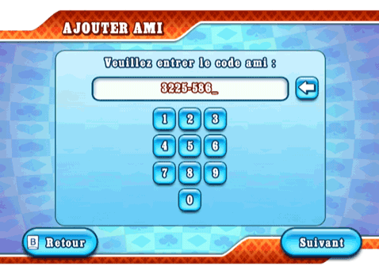

23 |
Amis |
 |
Vous pouvez obtenir votre code ami en entrant dans le menu Créer partie et le partager avec vos amis par téléphone, e-mail ou Internet. Liste d'amis  La liste d'amis a deux buts bien spécifiques : elle permet d'effectuer un suivi de vos amis et de leur statut, ainsi que de vous joindre à la partie qu'ils ont hébergée ou à laquelle ils sont en train de jouer. Vous pouvez suivre vos amis et vous joindre à leurs parties à la fois en 'Mondial' et en 'Amis', tant qu'il y a encore des places disponibles à leur table. Afin de devenir ami avec quelqu'un, vous et votre ami devez d'abord enregistrer vos codes ami respectifs dans le menu 'Ajouter ami'. Avant d'effectuer cette opération, vous ne pourrez voir que le code ami de votre ami, mais pas son statut en ligne ni son pseudo. Types de statuts
Votre ami(e) est en train de jouer et vous pouvez vous joindre à lui/elle. Sélectionnez-le/la dans votre liste d'amis.
Votre ami(e) est en ligne, mais il/elle n'est pas forcément en train de jouer.
Votre ami(e) est en ligne, en train de jouer, mais vous ne pouvez pas vous joindre à sa partie. S'il n'y a pas de smiley, cela signifie que votre ami est hors-ligne.
Sélectionnez cette icône pour supprimer un ami de votre liste d'amis. Ajouter ami  C'est ici que vous devez entrer les codes ami de vos amis. Votre ami devra faire la même chose sur sa console Wii pour que vous puissiez jouer ensemble ! |


 |
 |
 |